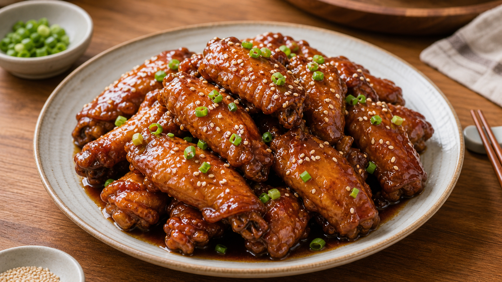
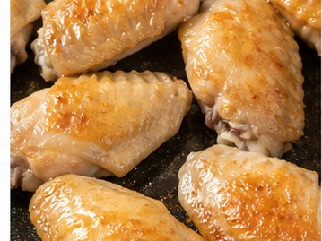
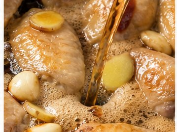
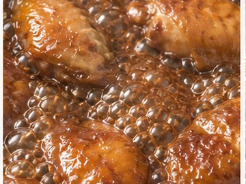
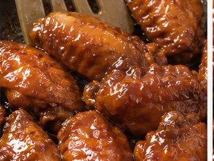
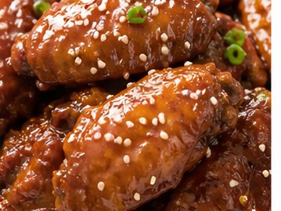

Reunion Dinner Recipe
Cola Chicken Wings
Good fortune and family-friendly taste

About This Dish
For younger Chinese immigrants, students and second-generation British Chinese families, cola chicken wings reflect a more modern form of home cooking. They show how family dishes can adapt to new tastes while still belonging at the shared table.
Ingredients
- Chicken wings (600 g)
- Cola (330 ml)
- Soy sauce
- Ginger (5 slices)
- Garlic (3 cloves, sliced)
- Spring onions (2, cut into sections)
- Cooking wine
- Oil
- Optional sesame seeds
Method
-

Rinse the chicken wings and pat them dry. Make 2 shallow cuts on each side so they absorb more flavour. Heat the oil in a pan. Add the chicken wings and cook for 4-5 minutes, turning them until both sides are lightly golden. -

Add ginger and garlic. Stir-fry for about 1 minute until fragrant. Add 1 tbsp cooking wine, 2 tbsp soy sauce and salt. -

Pour in the cola. Bring to the boil, then reduce to medium-low heat. Cover and simmer for 20-25 minutes, until the wings are cooked through and tender. -

Remove the lid and turn the heat to medium-high. Cook for another 5-8 minutes until the sauce becomes glossy and coats the wings. -

Serve hot, with spring onions and sesame seeds if using.
Allergens
- Soy
- May contain gluten depending on soy sauce brand
- Sesame, if used
Please check product labels carefully, especially for sauces and prepared ingredients.